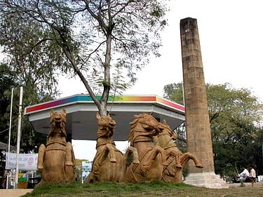

Zero Mile Stone (Marathi: शून्य मैलाचा दगड) is a monument built by British during Great Trigonometrical Survey of India in 1907 in Nagpur, Maharashtra. The Zero Mile Stone consists of a pillar made up of sandstone and another small stone representing the GTS Standard Bench Mark, and four stucco horses that were added later. The height of the top of the pillar is 1020.171 feet above mean sea level. In 2008, The Times of India undertook to maintain the monument for the next 5 years. Contrary to the popular belief, there is no verifiable evidence that it is a monument locating the geographical centre of colonial India in the city of Nagpur, Maharashtra, or that the Zero Mile Stone was erected by the British to use this point to measure all the distances.
While you drive past, it looks like just another roundabout in the city. But looking out of the car window, one wonders why they felt the need, at this particular intersection in Nagpur, to tell people that Varanasi is 729 km away and Jabalpur is 273 km away. There is no apparent connection between these cities and they are not even in the same state. But, as one stops by, the thick green foliage reveals a crumbling stone pillar, marked as “Zero Mile Stone”. “It is the centrepoint of India,” quips the taxi driver. Adding, as an afterthought, “If four horses are set free from all four corners of the country, this is where they will meet.” That may just have been an urban legend to garner tourist footfall, but it was certainly worth exploring. After all, the Zero Mile has been designated as a monument by the Maharashtra Tourism. But ever since the Partition, Nagpur is no longer the geographical centre of India anymore. That status has now shifted to Karaundi, a small village in Madhya Pradesh’s Katni district, approximately 343 km from the historical Zero Mile. However, for the city of Nagpur, Zero Mile remains the centre of attention in many ways. There is a Zero Mile Music Festival, besides many concerts and art shows that are held around the location. Now, though, there are plans to overhaul the monument and its surroundings. The Nagpur Metro will not only redefine the whole area around the heritage structure, it will also build a 20-storey metro station named after it.